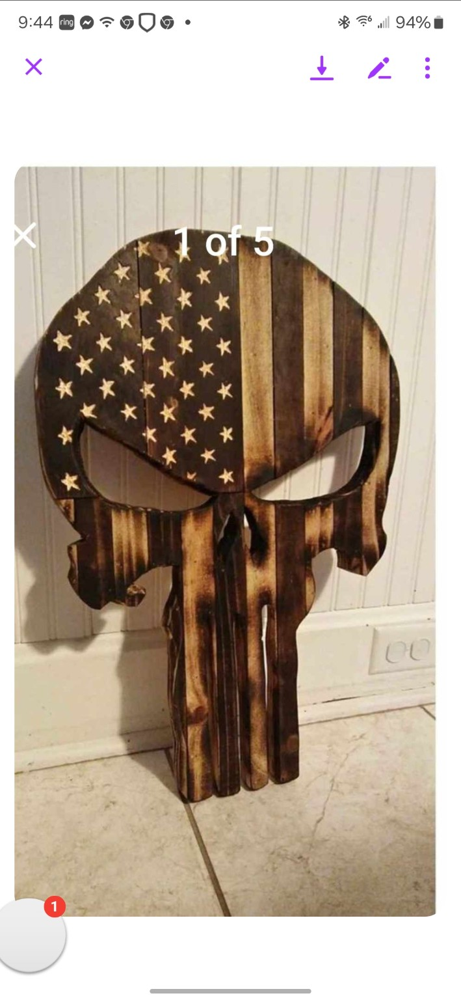
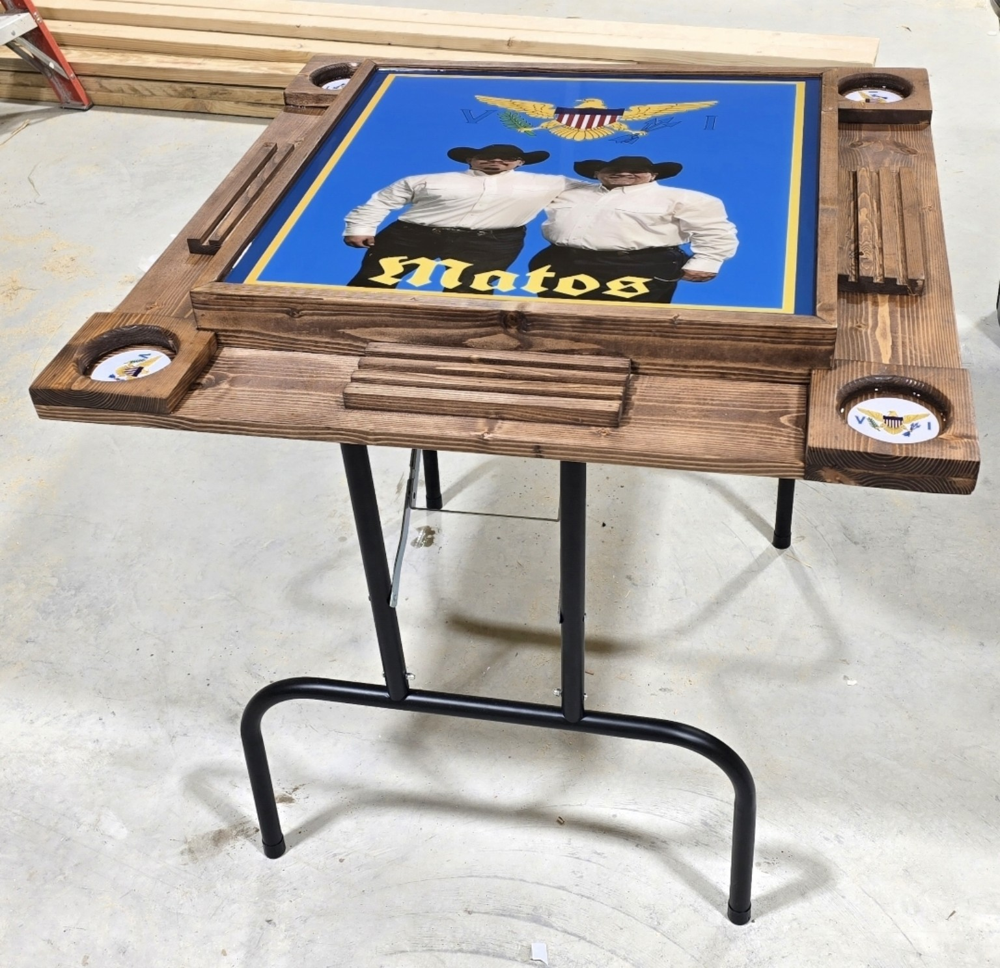
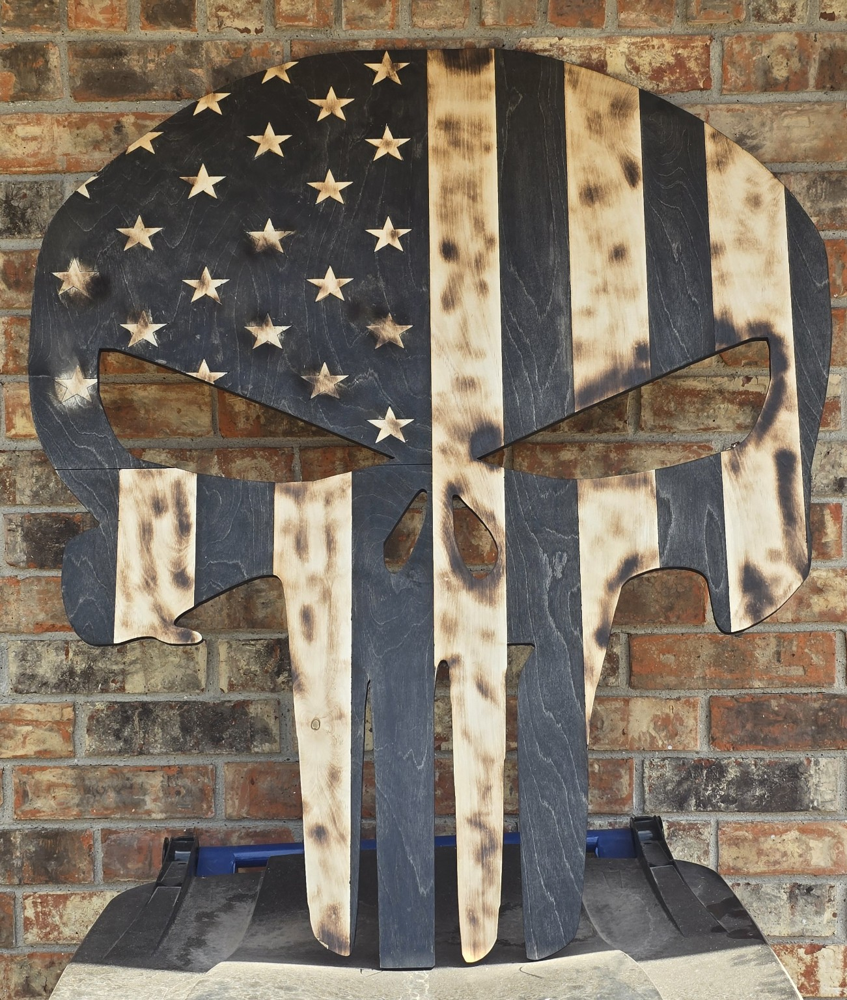
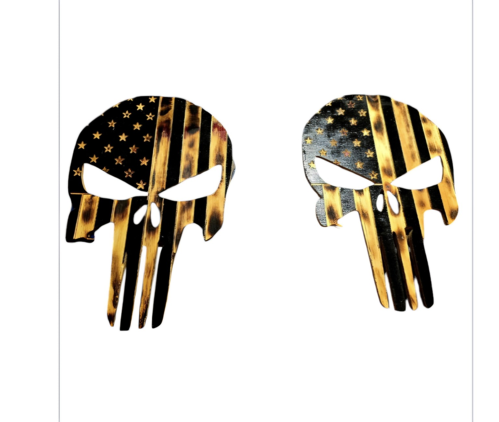
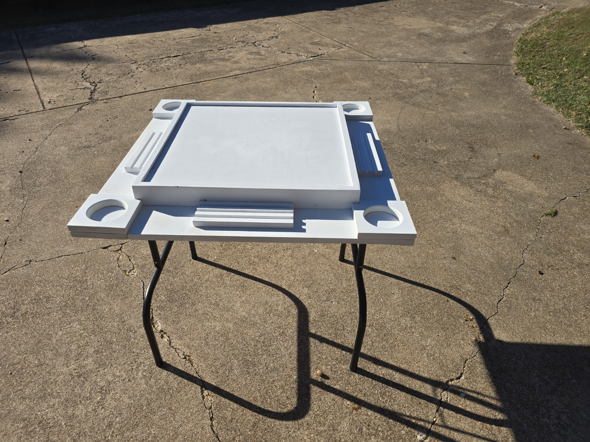
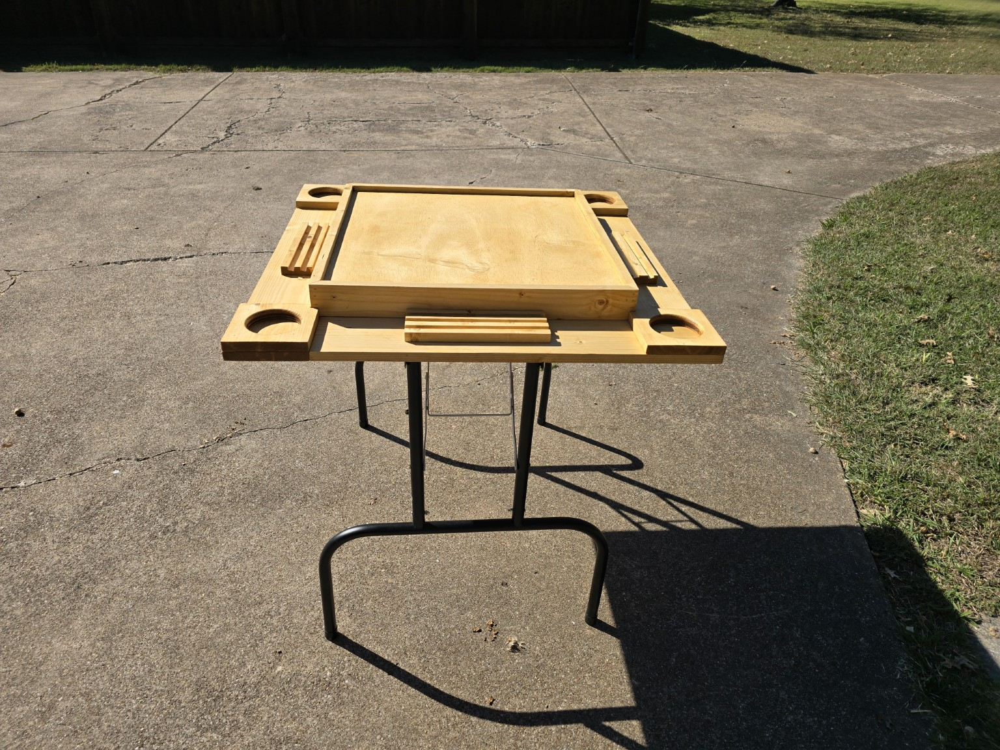
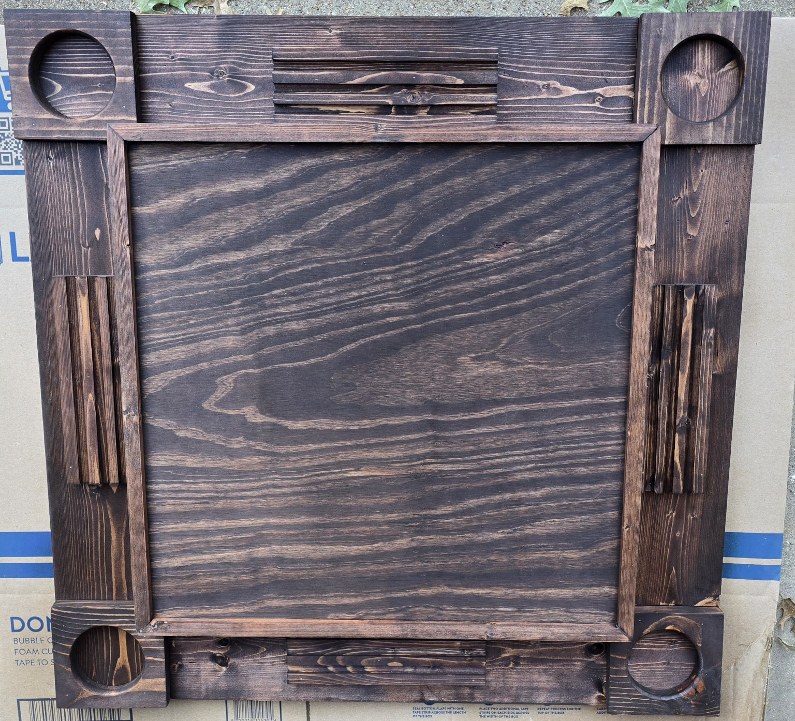
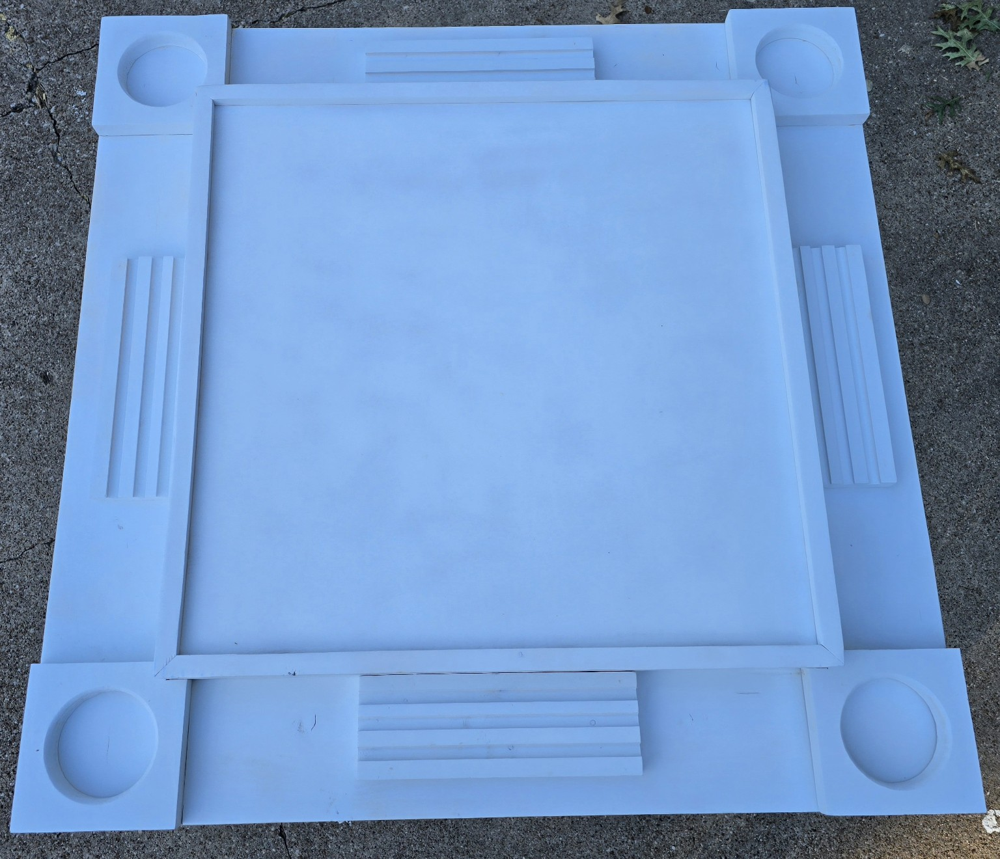

Handcrafted wood projects made to order. Choose your size, color, paint or stain, and personalization. Custom engraving and laser work are available on many projects.
Featured Products

American Flag Punisher Wall Art
Starting at $25.00
Made to order in your choice of size and finish. Choose paint or stain, colors, and a burned or non-burned finish. Engraving or laser personalization can be added for a small additional charge.
| Size | Price |
|---|
| 5 × 7 | $25 |
| 6 × 9 | $30 |
| 8 × 12 | $55 |
| 11 × 14 | $60 |
| 12 × 18 | $65 |
| 16 × 22 | $75 |
| 20 × 16 | $90 |
| 34 × 30 | $125 |
Any size can be made. Prices vary by size.
Request This Item
Portable Dominoes Game Table
Starting at $299.00
The $299 standard table includes legs and your choice of a plain or stained wood finish. Tables can be customized with colors, names, initials, logos or other designs for an additional fee.
If you want a specific picture, send a clear copy for review and pricing. The wood receives a protective spray clear coat, and the center playing surface is covered with a clear, glass-like epoxy finish over the picture.
Request a TableProject Gallery
Examples of finished projects and the build process. Custom colors, finishes and personalization are available.






Custom Orders
Have an idea that isn't shown here? Send the size you need, preferred colors, paint or stain, whether you want a burned finish, and any name, initials, engraving, laser work or picture you want included. Clear artwork produces the best results. I'll review your request and provide pricing before the project is made.
All pieces are made to order, so please allow production time. Local pickup is available in Red Oak, Texas. Shipping is extra when pickup isn't possible.